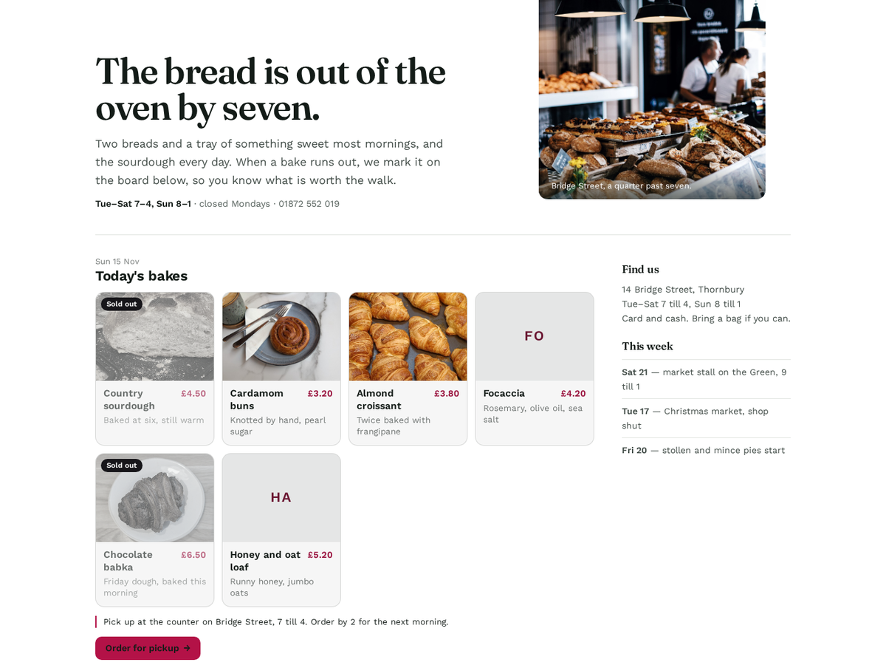

Bakery: Today's Bakes
Today's bakes and sold-out marks on your site
- Today's shelf as cards: photo, note, price
- A sold-out mark that clears at midnight
- A menu for each day, set once and left alone
- Pickup note and a button to your own orders

What it does
By nine in the morning the shelf tells the truth and your website does not. This app puts today's loaves, buns and pastries on your site as a small board: a photo, a name, a short note and a price for each bake, with a sold-out mark you tap when the last one goes.
Type the bakes once and pick the days they come out of the oven. Each morning the board shows that day's list by itself. Mark a bake sold out and the mark clears at midnight, so tomorrow starts clean without you clearing anything.
Add a pickup note and a link to the ordering page you already use, and a customer goes from "is it worth the walk?" to "put a loaf aside" in one tap. Mark a closed day and the board says so in your own words: "At the Christmas market Tuesday, back Wednesday at seven."
It is a sign in the window, not a till: no stock counts, no back-in-stock emails, no payments through us.
Free shows six bakes for today with a small credit link. Premium, $4 a month, takes as many bakes as you like, gives every day its own menu, clears the sold-out marks by itself, and adds the pickup note and the order button. Pro, $9 a month, adds three boards (the shop and the market stall), closed days and paste-a-week.
Price
Free
- Six bakes, today only
- Photo, note and price per bake
- Sold-out mark, cleared by hand
- Small credit link under the board
Premium
$4/month, $3.20/month yearly (20% off). Hidden pre-made plan "Premium" (vendorId premium) stays hidden
- As many bakes as you like
- A menu for each day of the week, switched at midnight
- Sold-out marks that clear themselves each night
- Pickup note and an order button to your own checkout
- No credit link
- Everything in Premium
- Three boards: shop, market stall, second counter
- Closed days with your own note
- Paste a week of bakes at once